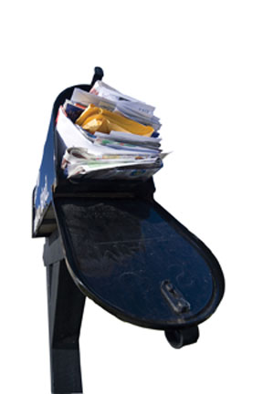

Shopping by mail can be a convenient and effective way to shop, but while some catalogs are desirable and useful, others are just junk sent by direct-mail marketers. Catalogs for products you don’t want clutter up your mailbox and your recycle bin, and they’re an unnecessary expense for the merchant and the environment. Each year 19 billion catalogs are mailed, representing 53 million trees.
If you get only a few unwanted catalogs, you can call their customer service numbers and ask to be removed from the mailing lists. If you have a large stack to tackle, try Catalog Choice. This free service lets consumers identify catalogs they don’t want and notifies the merchants. Its mission is to reduce the mailing of repeat and unsolicited catalogs. Just fill in your contact information, then identify the catalogs you no longer wish to receive. The site keeps a secure list of the catalogs you decline, and the status of your opt-out requests. Some mailings will cease immediately, while others will take a bit longer - some of the catalogers prepare print-run and labels up to several months in advance, so any that were already in the works will get mailed despite the opt-out. If you suspect that a request has been ignored, tell the site and it will send another notification.
Catalog Choice is maintained by the Ecology Center of Berkeley, Calif., and is endorsed by numerous nonprofit organizations including the National Wildlife Federation and the Natural Resources Defense Council. To date, more than 1 million people have used the site to opt out of more than 12 million catalogs.
|
 ALEXEY STIOP/FOTOLIA.COM Visit this handy new Web site to opt out of unwanted mail-order catalogs. |
|
|